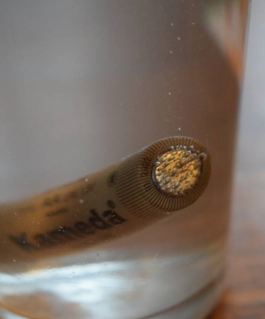

Noah Chemicals supplies the high-purity inorganic catalysts, electrolytes, and ceramic precursors that hydrogen technology companies use to build electrolyzers and fuel cells. Our San Antonio, TX synthesis lines deliver Iridium (IV) Oxide for PEM anode OER catalysts, Ruthenium (IV) Oxide as a cost-reduced OER alternative for AEM systems, ACS-grade Potassium Hydroxide for alkaline electrolyzer baths, and ultra-high-purity Yttrium Oxide and Zirconium Oxide as the precursor pair customers process into YSZ for SOEC electrolyte layers. We extend that depth with Nickel (II) Oxide and Cobalt (II, III) Oxide for SOFC cathode and perovskite work, and the full lanthanum and strontium precursor set for LSCF synthesis. Every lot is validated via ICP-OES so trace-metal tolerances stay locked from R&D through commercial scale.

In hydrogen systems, efficiency and durability are functions of chemical purity. Trace metallic impurities or anionic contaminants directly degrade catalyst activity, foul membranes, and accelerate component failure, increasing the levelized cost of hydrogen and operational risk. The materials below are synthesized and verified by Noah to meet the stringent purity thresholds demanded by leading electrolyzer and fuel cell manufacturers.
Iridium (IV) Oxide is the workhorse oxygen evolution catalyst for PEM electrolyzer anodes operating in low-pH conditions where most other transition metal oxides dissolve. Noah supplies IrO2 at 99.8% purity in -100 mesh (Product #18709, CAS 12030-49-8), with controlled crystallinity for the rutile phase that delivers stable OER activity over thousands of operating hours. Given iridium's extreme scarcity and the procurement pressure scaling electrolyzer fleets are putting on global PGM supply, every milligram has to perform. We also stock Iridium (III) Chloride and Iridium metal powder (-325 mesh) as the soluble and metallic precursor routes customers use for catalyst-coated membrane fabrication and sputter deposition.
Solid Oxide Electrolyzer manufacturers formulate their own YSZ to lock in proprietary doping ratios and sintering behavior. Noah supplies the precursor pair that makes that possible: Yttrium Oxide at purities up to 99.999% with sub-2-micron particle size, and Zirconium Oxide processed to tape-casting and screen-printing tolerances. By controlling impurities at the precursor level, we eliminate the silica and alumina contamination that destroys ionic conductivity in the operating window of 700 to 1000 degrees C. Customers blend at the 8 mol percent yttria target for fully stabilized cubic phase or run their own gradient compositions for graded electrolyte films. We also supply Yttria-Stabilized Hafnia for high-temperature ceramics where zirconia phase stability is insufficient.
For alkaline water electrolysis, the purity of the Potassium Hydroxide electrolyte is a primary determinant of system longevity. Noah delivers battery-grade KOH solutions, typically 30-40 percent by weight, with exceptionally low levels of carbonate, chloride, and metallic contaminants. Carbonate impurities can precipitate within the porous electrodes or membrane, increasing ionic resistance and reducing efficiency. Chlorides and other halides accelerate corrosion of nickel electrodes, leading to premature system failure. Our stringent quality control, including ICP-OES analysis, guarantees that our KOH meets the sub-ppm specifications required to prevent electrode passivation and membrane fouling, ensuring stable, long-term operation for commercial-scale alkaline electrolyzers.
For developers building toward iridium-free or low-iridium electrolyzers, Ruthenium (IV) Oxide is the leading platinum-group alternative for oxygen evolution. Noah supplies anhydrous RuO2 at 99.95% purity in -100 mesh, plus the hydrate form (RuO2·xH2O) at 99.9% for solution-phase deposition routes. We also stock the Ruthenium (III) Chloride trihydrate and anhydrous forms used as soluble catalyst precursors for sputter and atomic layer deposition workflows. Ruthenium-based catalysts deliver competitive OER kinetics in alkaline and AEM environments at a significantly lower precious metal cost than Iridium, which matters as electrolyzer fleets scale into the gigawatt range and PGM availability becomes a procurement constraint.
We validate every lot of our Platinum Group Metal (PGM) catalysts, including Iridium and Platinum compounds, using Inductively Coupled Plasma Mass Spectrometry (ICP-MS). This allows us to certify purity down to parts-per-billion levels, screening for detrimental trace metals like iron, chromium, copper, and zinc that can poison catalytic sites or degrade membrane ionomers. Our secure PGM sourcing chain ensures material authenticity and ethical procurement. We work directly with catalyst coated membrane manufacturers to optimize catalyst loading (mg/cm²) and particle morphology, helping to balance the high performance our materials provide with the immense cost pressure of scarce PGM resources.
For SOEC ceramic precursors like Yttrium Oxide, Zirconium Oxide, Lanthanum Oxide, and the Strontium and Cobalt component oxides, lot-to-lot consistency is non-negotiable for high-yield manufacturing. We lock in a detailed specification sheet after initial qualification and report key parameters on every Certificate of Analysis: particle size distribution (D10, D50, D90) via laser diffraction, specific surface area via BET, and tap density. That ensures flow, packing, and sintering behavior remain identical from the first kilogram to the thousandth, which is what customers need to formulate their own YSZ and LSCF compositions reliably across tape casting, screen printing, and spray deposition runs.
Carbonate contamination is a primary failure mode in alkaline systems. It occurs when aqueous KOH absorbs atmospheric carbon dioxide, forming potassium carbonate (K2CO3). This salt has low solubility in concentrated KOH and can precipitate, fouling AEM membranes and passivating nickel-based electrodes, which drastically reduces system efficiency. To prevent this, Noah Chemicals manufactures and packages its high-purity KOH solutions under an inert nitrogen blanket. We ship in specially sealed containers and provide a Certificate of Analysis guaranteeing carbonate levels are below 100 ppm, protecting the integrity of your electrolyte from our facility to your production line.
We are structured to support the entire hydrogen technology lifecycle, from academic research and national lab projects to full-scale commercial production. We have no rigid minimum order quantity for many catalog items and routinely supply R&D programs with quantities as small as 100 grams for initial material screening. Our agility allows us to provide these smaller quantities with the same rigorous quality control and full lot traceability as our multi-ton orders. This documentation is critical for our partners in DOE-funded programs, including Hydrogen Hub projects, ensuring a seamless and auditable transition from bench-scale validation to pilot deployment.